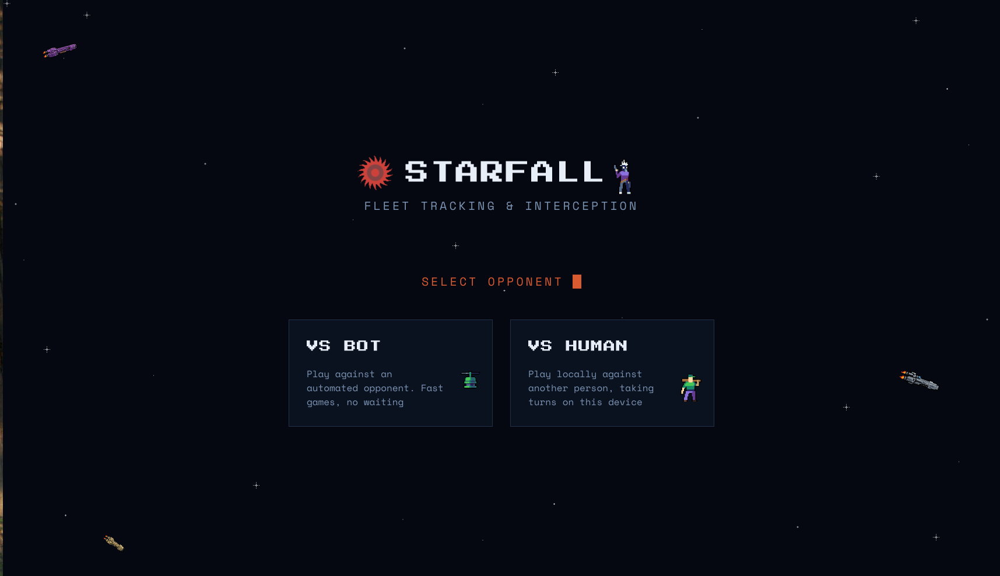
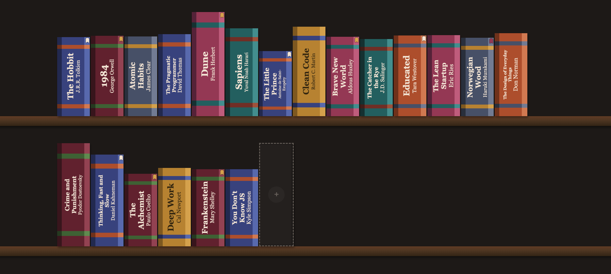
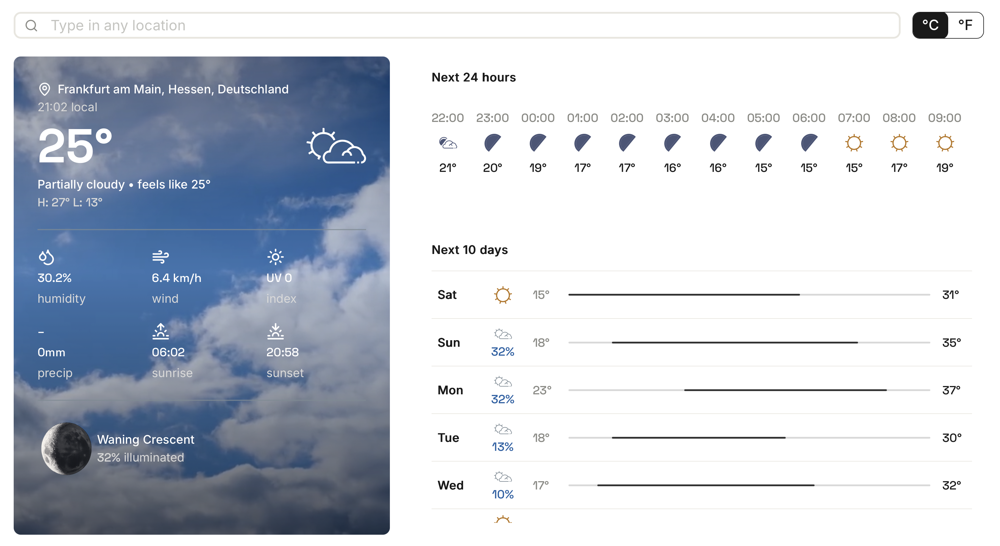
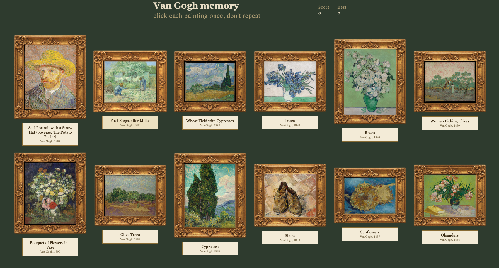
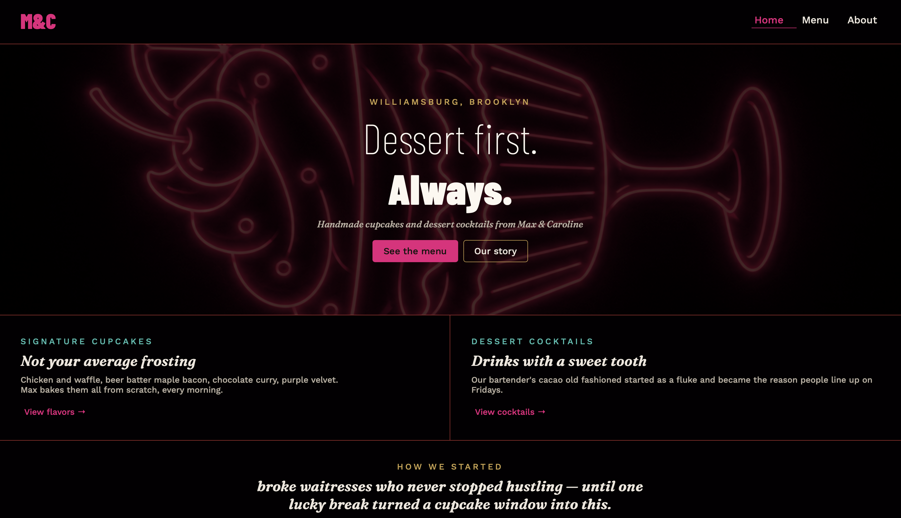
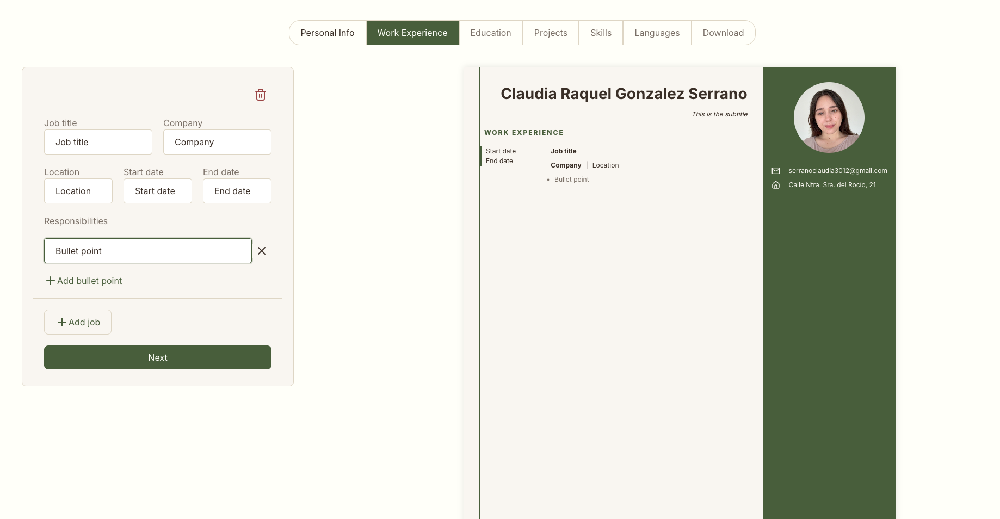

My work

Starfall
Battleship game with drag-and-drop deployment and a hunt-and-target opponent.

Library
A digital bookshelf rendered as colorful, page-count-scaled book spines.

Weather app
Current conditions, hourly and 10-day forecasts, with condition-based visuals.

Van Gogh Memory
A museum-styled memory game with paintings and details fetched live from the Met Museum API.

Dessert Bar
A multi-page restaurant site with menu, cocktails, and a warm visual identity.

CV Builder
React CV builder with per-section editing, a live preview, and one-click PDF export.